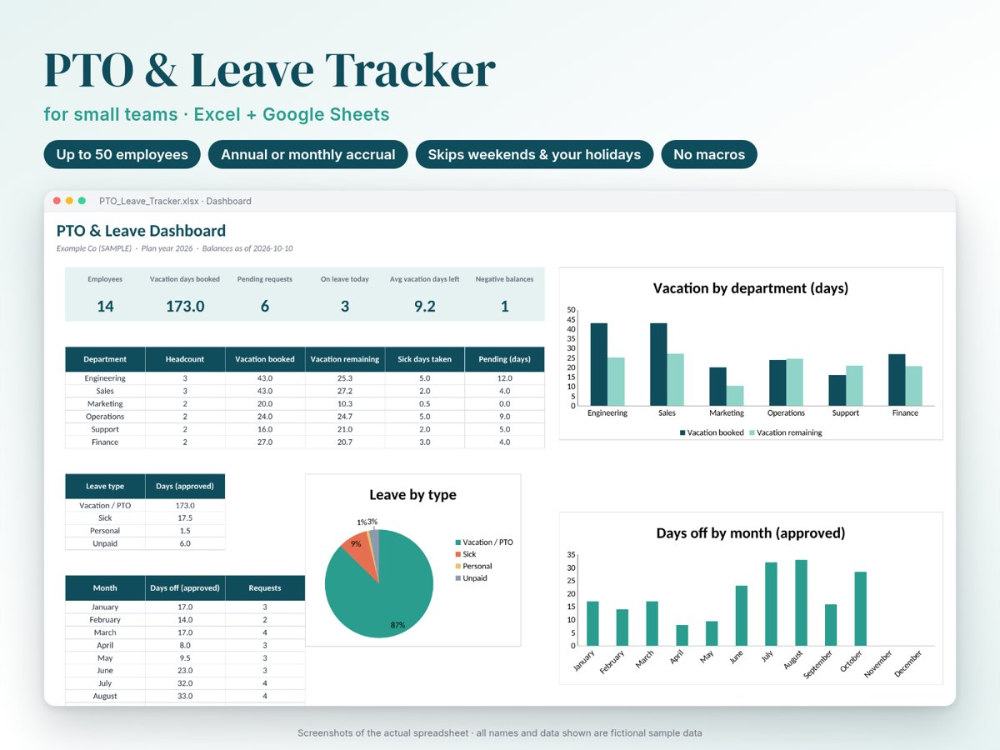

Spreadsheets that do the boring part for you.
Ready-made Excel & Google Sheets templates with formulas, dropdowns and dashboards already built. Fill in a few cells and the rest updates itself.

PTO & Leave Tracker
For small teams of up to 50 people: balances, accrual, team calendar and dashboard, with weekends and your holidays excluded automatically.
$17
See details
Reading Tracker
A book journal with yearly goals, ratings, a TBR list, a monthly review and charts of your reading habits.
$9
See details